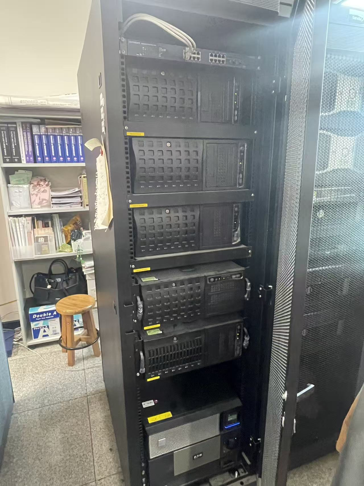
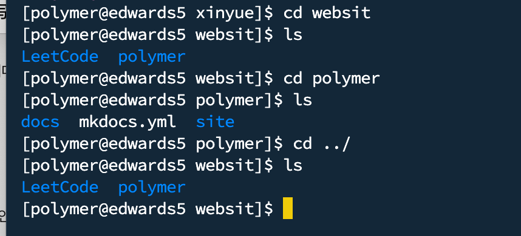

원격 서버 사용 안내
이 페이지는 실험실 원격 서버 접속 방법, 기본 명령어, 파일 업로드 및 다운로드 방법, 서버 사용 시 주의사항을 정리한 문서입니다.
1. 원격 서버란?
원격 서버는 계산 작업, 데이터 저장, 시뮬레이션 실행 등을 위해 사용하는 실험실 공용 컴퓨터입니다.
개인 컴퓨터보다 장시간 계산 작업을 수행하기에 적합합니다.
2. 접속 프로그램 및 설치 파일
서버 접속과 파일 전송에는 아래 프로그램을 사용할 수 있습니다.
- PuTTY
- FileZilla
- Termius
- VS Code Remote SSH
- Terminal
PuTTY와 FileZilla 설치 파일은 아래 압축 파일을 참고합니다.
!!! warning "주의"
설치 파일의 용량이 100MB를 넘으면 GitHub에 업로드할 수 없습니다.
용량이 큰 경우에는 Google Drive, OneDrive 또는 실험실 서버에 따로 보관하고 링크만 남기는 것이 좋습니다.
3. 서버 접속 방법
서버 접속 시 필요한 정보는 아래와 같습니다.
| 항목 | 내용 |
|---|---|
| 서버 주소 | 담당자에게 확인 |
| 사용자 이름 | 개인 계정 |
| 비밀번호 | 개인 계정 비밀번호 |
| 접속 프로그램 | PuTTY, Termius, VS Code Remote SSH 등 |
!!! danger "보안 주의"
서버 IP, 사용자 이름, 비밀번호는 외부에 공개하지 않습니다.
GitHub Pages는 공개 웹사이트이므로 실제 계정 정보나 비밀번호를 문서에 직접 작성하지 않습니다.
4. 실험실 서버 목록
현재 실험실에서 사용하는 주요 서버는 아래와 같습니다.
| 서버명 | 설명 |
|---|---|
| ed1 | 계산 서버 |
| ed2 | 계산 서버 |
| ed3 | 계산 서버 |
| ed4 | 계산 서버 |
| ed5 | 계산 서버 |
| sanchez | 메인 서버 |
| baxter | 계산 서버 |
sanchez는 메인 서버이며, 내부에 sanchez1, sanchez2 두 개의 하위 서버가 있습니다.
sanchez에 접속한 후 아래 명령어를 입력하면 하위 서버로 접속할 수 있습니다.
rsh sanchez1
또는:
rsh sanchez2
서버 IP는 아래 형식을 따릅니다.
220.149.233.xxx
마지막 숫자는 서버마다 다르므로, 실제 접속 주소는 교수님 또는 서버 담당자에게 확인해야 합니다.
아래 이미지는 서버 접속 정보 및 서버 목록을 확인하기 위한 참고 자료입니다.

5. 파일 전송 방법
파일 전송은 주로 아래 방법을 사용할 수 있습니다.
- FileZilla
- Termius
- VS Code Remote SSH
- scp 명령어
- sftp
처음 사용하는 경우에는 FileZilla 또는 Termius를 사용하는 것이 비교적 편리합니다.
5.1 FileZilla 사용
FileZilla는 서버와 개인 컴퓨터 사이에 파일을 주고받을 때 사용합니다.
확인할 내용:
- 서버 주소
- 사용자 이름
- 비밀번호
- 포트 번호
- 업로드 / 다운로드 위치
5.2 Termius 사용
Termius는 서버 접속과 파일 전송을 함께 할 수 있는 프로그램입니다.
외부에서 서버 상태를 확인하거나 간단한 파일 전송을 할 때 사용할 수 있습니다.
6. 기본 명령어
서버에서 자주 사용하는 기본 명령어는 아래와 같습니다.
pwd # 현재 위치 확인
ls # 파일 목록 확인
ls -lh # 파일 크기를 보기 쉽게 표시
cd 폴더명 # 폴더 이동
cd .. # 상위 폴더로 이동
mkdir 폴더명 # 새 폴더 만들기
rm 파일명 # 파일 삭제
rm -r 폴더명 # 폴더 삭제
cp 원본 대상 # 파일 복사
mv 원본 대상 # 파일 이동 또는 이름 변경
whoami # 현재 사용자 이름 확인
logout # 로그아웃
exit # 로그아웃 또는 터미널 종료
7. 작업 실행 관련 명령어
계산 작업을 실행하거나 중단할 때 자주 사용하는 명령어는 아래와 같습니다.
./run.sh # 실행 파일 실행
Ctrl + C # 현재 실행 중인 작업 중단
Ctrl + Z # 현재 작업 일시정지
bg # 일시정지한 작업을 백그라운드로 실행
q # 일부 프로그램 또는 top 화면 종료
심볼릭 링크가 필요한 경우 아래와 같은 형식으로 사용할 수 있습니다.
ln -s /home/USERNAME/ /mnt/USERNAME
여기서 USERNAME은 본인의 서버 계정 이름으로 바꿔야 합니다.
8. top 명령어 사용 방법
top 명령어는 서버에서 현재 실행 중인 프로세스와 CPU, 메모리 사용량을 실시간으로 확인할 때 사용합니다.
서버가 느리거나 계산 작업이 제대로 실행되고 있는지 확인할 때 자주 사용합니다.
top
아래 이미지는 명령어 사용 예시입니다.

8.1 top 화면에서 확인할 수 있는 항목
| 항목 | 의미 |
|---|---|
| PID | 프로세스 ID |
| USER | 해당 작업을 실행한 사용자 |
| PR / NI | 프로세스 우선순위 |
| VIRT | 프로세스가 사용하는 전체 가상 메모리 |
| RES | 실제 물리 메모리 사용량 |
| SHR | 공유 메모리 사용량 |
| S | 프로세스 상태 |
| %CPU | CPU 사용률 |
| %MEM | 메모리 사용률 |
| TIME+ | 해당 프로세스가 사용한 누적 CPU 시간 |
| COMMAND | 실행 중인 명령어 또는 프로그램 이름 |
8.2 프로세스 상태 S의 의미
| 상태 | 의미 |
|---|---|
| R | 실행 중 또는 실행 대기 상태 |
| S | 대기 상태 |
| D | 디스크 입출력 등으로 인해 중단할 수 없는 대기 상태 |
| T | 정지된 상태 |
| Z | 좀비 프로세스 |
8.3 top 화면에서 자주 사용하는 키
| 키 | 기능 |
|---|---|
q |
top 종료 |
P |
CPU 사용률 기준으로 정렬 |
M |
메모리 사용률 기준으로 정렬 |
u |
특정 사용자 프로세스만 보기 |
1 |
CPU 코어별 사용량 표시 |
h |
도움말 보기 |
k |
특정 프로세스 종료 |
!!! danger "주의"
k 키를 사용하면 프로세스를 종료할 수 있습니다.
본인이 실행한 작업이 아닌 경우 절대 함부로 종료하지 않습니다.
다른 사람의 계산 작업을 종료하면 데이터 손실이나 계산 실패가 발생할 수 있습니다.
9. 서버 사용 시 주의사항
서버는 여러 사람이 함께 사용하는 공용 자원이므로 아래 사항을 지켜야 합니다.
- 다른 사람의 폴더나 파일을 임의로 삭제하지 않습니다.
- 큰 파일은 정리하거나 개인 저장 공간으로 이동합니다.
- 계산 작업을 실행하기 전에 저장 위치와 파일명을 확인합니다.
- 문제가 발생하면 임의로 설정을 바꾸지 말고 담당자에게 문의합니다.
10. 참고사항
파일 정리, 작업 실행, 데이터 저장 위치를 항상 신중하게 확인해야 합니다.
서버가 느리거나 문제가 있어 보일 때 바로 재부팅하거나 프로세스를 종료하지 말고, 먼저 top 명령어로 어떤 작업이 CPU와 메모리를 많이 사용하고 있는지 확인합니다.
다른 사람의 작업일 수 있으므로, 문제가 있어 보이면 해당 사용자나 서버 담당자에게 먼저 확인하는 것이 좋습니다.